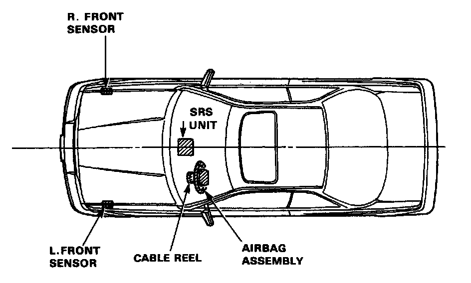
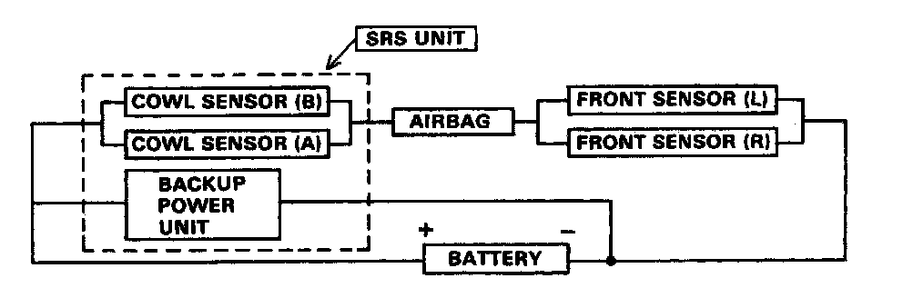
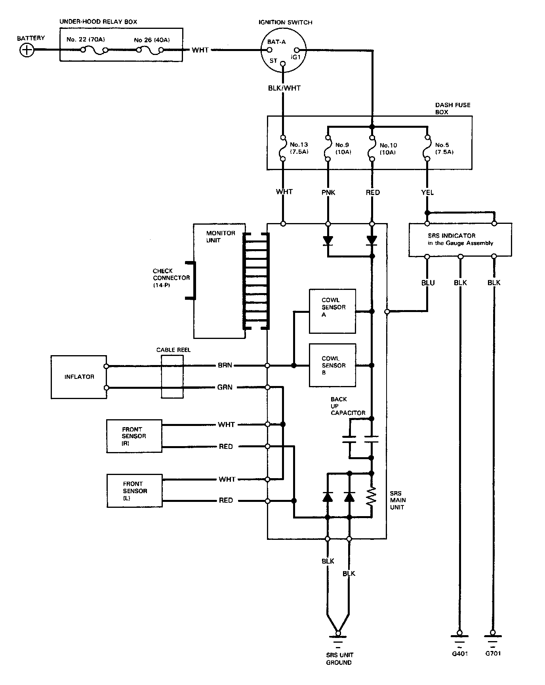

Air Bag Systems: Description and Operation
Description
The SRS is a safety device which, when used in conjunction with the seat belt. is designed to protect the driver by operating only when the car receives a frontal impact exceeding a certain set limit.
The system is composed of left and right front sensors, the SRS unit (which includes two cowl sensors), the cable reel and airbag assembly.

OPERATION:
As shown in the diagram below, cowl sensors (A) and (B) are connected in parallel, as are the left and right front sensors. The two parallel sets of sensors are connected in series by the airbag inflator circuit and the car battery.
In addition, a backup power unit is connected in parallel with the car battery. the backup power unit and the cowl sensors are located inside the SRS unit:
The SRS operational sequence is as follows:
(1) One or both cowl sensors activate, and one or both front sensors activate
(2) Electrical energy is supplied to the airbag inflator by the battery. or the backup power unit if the battery voltage is too low.
(3) Airbag deployment
At least one cowl and one front sensor must be activated simultaneously for at least 0.002 seconds in order for the airbag to be deployed.

Self-diagnosis system
A self-diagnosis circuit is built into the SRS unit; when the ignition switch is turned ON, the SRS warning light comes on and goes out after about 8 seconds if the system is operating normally. If the light does not light, or does not go out after 8 seconds, or if it comes on while driving, this indicates an abnormality and the system must be inspected and repaired as soon as possible.

Circuit Diagram